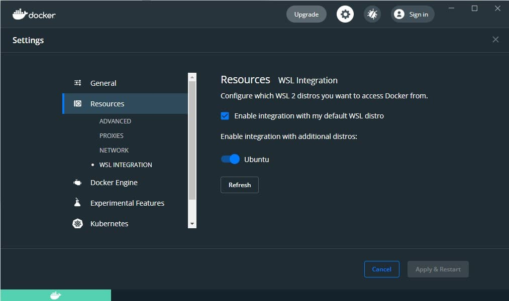

Developing in WSL Containers (Now with GPU support!)
As a programmer there were a lot of version/environment issues I faced while developing with Python, Node and other tools. Some examples:
- Switching between different Python versions on Windows is difficult and requires third-party solutions e.g. Chocolatey
- Switching between different Node versions also requires a third-party solution (nvm)
- While
pipenv,venvandpoetryare ways to manage different Python environments, they still depend on the base Python version installed, which is another external dependency - Maintaining other dependencies such as CUDA drivers,
ffmpegetc.
I thought about this issue while deciding on a Python packagement system for Windows, and here is my solution.
Docker Containers, in WSL2, in VSCode
In a nutshell, my solution is to use VSCode's Remote - Containers extension, to open a folder in WSL2, and then mount that folder in a Docker container.
This has several benefits:
- Ability to lock environments for a project, such as Python, Node, or even Java versions
- Repeatable builds, irregardless of the host OS/drivers
- Host filesystem only contains source code and nothing else
- Containers on the host can be accessed remotely over SSH - the only tools required on the remote computer are SSH and VSCode
- GPU passthrough is supported since Windows 10 version 21H2.
Note that files and source code are stored in the WSL distro, and can be viewed natively in Windows Explorer via the network share \\wsl$.
The reason why I use the WSL filesystem, and not a bind mount on the Windows filesystem, is for performance.
What is WSL?
WSL is a compatibility layer which allows Linux binaries to run natively on Windows systems. WSL2 takes this further, and includes a real Linux kernel with full system call capabilities.
Installing WSL will allow you to run a complete Linux distribution on your Windows PC (with the wsl command).
Getting Started
Installing WSL2 and a default distro:
- Follow the instructions here to install WSL2 and the default Linux distribution (Ubuntu)
- Next, check that the Ubuntu distribution is set as default, and is on WSL2:
wsl -l -vshould show:- If Ubuntu is missing, install it from the Microsoft Store (you need to run
ubuntufrom the command prompt after) - If Ubuntu is not the default distro (marked with a *), run
wsl --set-default Ubuntu. - If the
VERSIONfor Ubuntu is not2, runwsl --set-version Ubuntu 2. - (Advanced) If you want to move the WSL installation to another folder of your choice, you can use the
--exportfollowed by the--importcommands.
Installing Docker and configuring it to use the WSL2 backend:
- Follow the instructions here
- Ensure that
Enable integration with my default WSL distro, and integration for your distro are both checked.  - Check that Docker is working:
docker ps
{kind=link}
Setup git in WSL2
VSCode adopts the following behaviors with regards to .gitconfig:
- If a repository is cloned and opened in a container, the
.gitconfigfrom Windows (C:\Users\<USER>\.gitconfig) is copied and used - If a WSL2 folder is opened in a container, the
.gitconfigfrom WSL (~/.gitconfig) is copied and used in the container
Therefore, since we are opening WSL2 folders in containers, we need to setup git on WSL2 (it's not setup by default).
- Open up a WSL2 terminal:
wsl - Set your username:
git config --global user.name <USERNAME> - Set your email:
git config --global user.email <EMAIL>(note, if you have setup email privacy on Github, you will find your email at https://github.com/settings/emails) - If you want to use VSCode as the editor in
git, do:git config --global core.editor "code --wait" - Verify your settings with
git config --list
That's it. VSCode configures the credential helper automatically for you (by setting up some sort of SSH/GPG agent forwarding).
Opening a WSL2 Folder in a container
- Follow this guide.
- Notes:
- You can modify the
.devcontainer/Dockerfileto your liking - e.g. if you want to add Java to a Python image, install package dependencies during build, etc - If you want to install requirements automatically e.g. with
pip, you can either uncomment that particular line in theDockerfile(if it exists) or write your own e.g.:
- You can modify the
[Optional] GPU Passthrough
If you would like to use your Nvidia GPU in a container, you need to ensure:
- The container has the Nvidia GPU drivers installed
- CUDA is installed in the container
Using a prebuilt image e.g. pytorch/pytorch will include all these requirements.
Once you have done that, check the output of nvidia-smi:
Wed Mar 30 12:33:38 2022
+-----------------------------------------------------------------------------+
| NVIDIA-SMI 510.06 Driver Version: 510.06 CUDA Version: 11.6 |
|-------------------------------+----------------------+----------------------+
| GPU Name TCC/WDDM | Bus-Id Disp.A | Volatile Uncorr. ECC |
| Fan Temp Perf Pwr:Usage/Cap| Memory-Usage | GPU-Util Compute M. |
| | | MIG M. |
|===============================+======================+======================|
| 0 NVIDIA GeForce ... WDDM | 00000000:01:00.0 On | N/A |
| 40% 41C P0 49W / 151W | 2595MiB / 4096MiB | 0% Default |
| | | N/A |
+-------------------------------+----------------------+----------------------+
Conclusion
And that's it! Start up, rebuild and stop your containers as you like.

Finally, you can even use multiple containers with docker-compose.yml (although for development you'd be likely to be use just one).